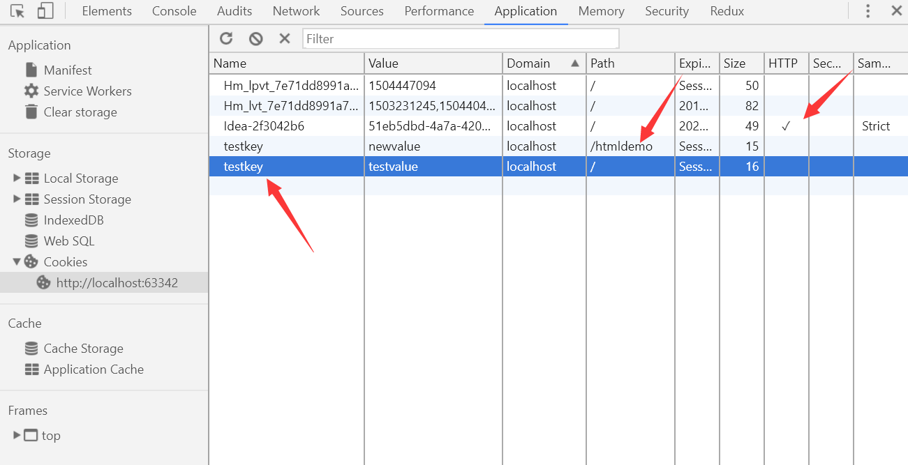

跨域有多种解决方案，包括JSONP，CORS，反向代理等等。CORS是我感觉最“优雅”的一种方案。但是这个方案下的cookie有一些不一样的表现，做相关尝试后做点记录。
问题起源
有人问我，为什么JS设定上的cookie，发出去后端收不到。用的是CORS解决跨域问题，JS设定的cookie在chrome的devtools里也能看到，但发出去后端收不到，请求头上都没有。
不，不是没配XMLHttpRequest.withCredentials的问题，机智的我还是一秒想到了他问题的原因，cookie是分domain的，JS设的cookie当然是本域的cookie。
是他的后端同学把要给他的cookie放到了response body里，要求他手工将这个cookie字段写入到document.cookie里，有点不能理解后端怎么想的，Set-Cookie不会用？
那么，JS能不能操作别的域的cookie呢？如果不能，原因呢。有没有方法可以操作别的域的cookie呢，这些cookie我们能从哪里看到呢。
解决方案
为什么我要把解决方案放到这里，因为我最后没能非常好的解决问题，所以只能给出一些建议，后面则是对问题的表现进行的一些摸索。
首先，Nginx做反向代理替代CORS来解决跨域，在开发个人小型应用时是个不错的方案我认为，除了配置Nginx一下，其它地方都和传统的WEB开发没什么区别。Cookie该怎么用怎么用，JS请求该怎么发怎么发，体验挺不错的。而且结合Docker来做这个事，在开发、集成、测试、部署整个流程下都是很方便的。
其次，类似于豆瓣微博QQ开放平台等等提供API的平台，CORS是必要的，但这些API平台不用cookie、session来做身份校验，而是靠token。token的获取和发送对JS来说都是可操作的，就没有cookie什么事了，也是极好的，如果不是开放平台，JWT也是非常合适的方案。
JSONP我从来没用过，感觉也像是一种注定要消失的方法，不谈。
尝试过程
代码：https://github.com/sky-admin/skyADMIN/tree/master/cors-demo
服务器端准备
- express做服务器，3000端口
- setcookie和getcookie两个接口
- cors配置
前端页面准备
- 纯HTML，IDEA作为临时服务器，63342端口
- jquery，封一下ajax，设置跨域带cookie
- 两个button绑定事件，分别触发set和get接口
效果
前端页面：

后端代码：
1 | const express = require('express'); |
测试问题
CORS下cookie是否正常可用
先按按钮1，向服务器发起一个请求，在开发者工具中可以看到，拿到了正确的响应，response header里也有Set-Cookie字段：
再按按钮2，request header中有Cookie字段，服务器端返回了cookie的值为testvalue。说明OK，cookie正常且可用。一开始我用CORS也基本就这样用，没有问题，也就没有好奇。
现在有了问题，我们再试试别的。
JS编辑Cookie后服务器端是否能收到
通过document.cookie = 'testkey=newvalue'，编辑了cookie，再次点击按钮2，发现服务器端获取的cookie值没变化，看请求头也没有变化。
这个问题的原因是cookie是分domain（域）的，不同domain的cookie不会乱发，简化一下这个问题：a.com向b.com发请求，b.com返回的Set-Cookie字段设置上的cookie，只会再下次向b.com发请求时才带上，向a.com发不会带。反过来，用JS直接设置的cookie是在本域的，即a.com上，向b.com发请求不会带上。
对，这就是朋友一开始问我的问题，他的后端把cookie值放在response body里，让他手工将其设定到document.cookie里，发送出去却读不到，因为不是一个域的。
JS可以操作别的域的cookie吗
不可以，指定的domain不是本域的话，直接认为是非法的，设定不上去。
怎么看Cookie
本域的cookie
- document.cookie就可以看到，在控制台上打印出来是一个字符串，里面是key=value的形式，用分号分隔的。
- 还可以用chrome浏览器的devtools，application栏下面有cookies可以显示。

这里有个奇怪的表现，testkey=testvalue这个cookie是属于localhost:3000的，这里应该看不见才对，应该是因为虽然端口不同，非同源，有跨域问题，但是domain相同。
改一改代码，把请求发往http://www.test1.com:3000，修改本机的hosts文件，把这个域名指向127.0.0.1，即本机。则看不见testkey=testvalue了。

跨域的cookie
首先，跨域的cookie也是真实存在的，第一次就证实了，它在request header上有。然而，上述两种方式都无法查看。还试过直接去目标域名查看，也没有。我甚至一度以为它根本就无法被查看。
最后发现可以在这里找到它：

跨域的cookie能被清理掉吗
能，在devtools里，虽然看不见它，但是一旦清除所有cookie，跨域cookie也没了。
总结
- 跨域cookie存在且有效，使用起来和正常的没有区别
- 跨域cookie无法修改，无法被document.cookie和devtools看到
- 跨域cookie只提交到目标域，除非两者的domain相同，只有端口的区别
- 本域的cookie不会提交到目标域
- 跨域的cookie可以在devtools里清除掉